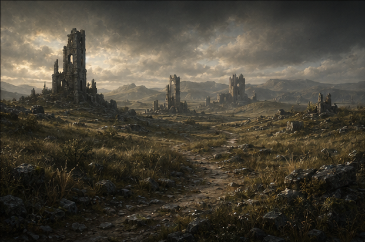

WORLDS WITHOUT NUMBER
ATLAS
SOMBRAS DE GELO E FERRO
Q17 • R22
1 HEX = 6 MILHAS • CÂMERA NÃO MOVE O GRUPO

TERRENO ATUAL
RUÍNAS ROCHOSAS
Colinas acidentadas e ruínas conhecidas neste hex.
TIPOCOLINAS / RUÍNAS
MOVIMENTO BASE1,5 mi/h
ESTADODESCOBERTO